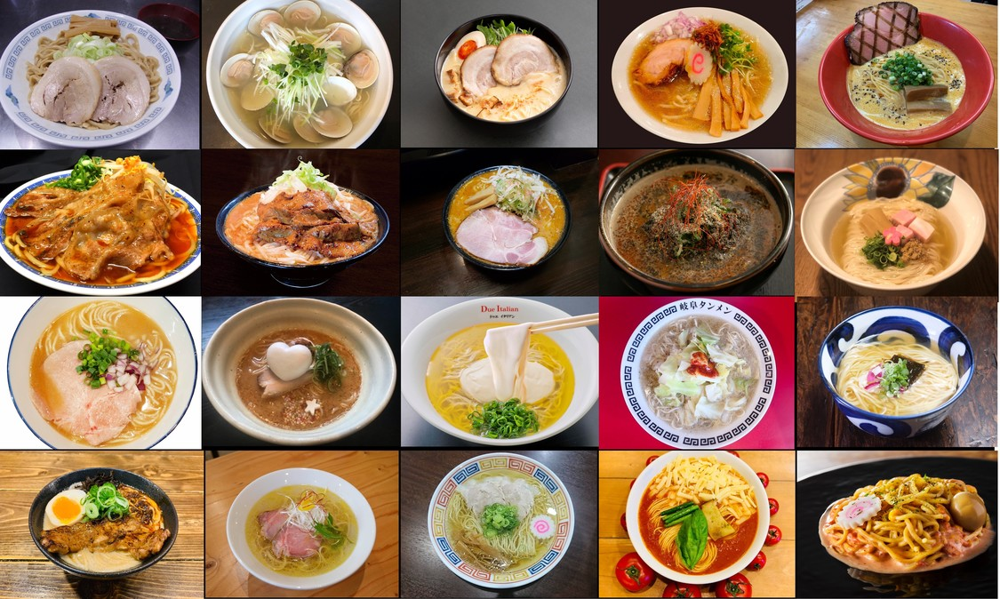
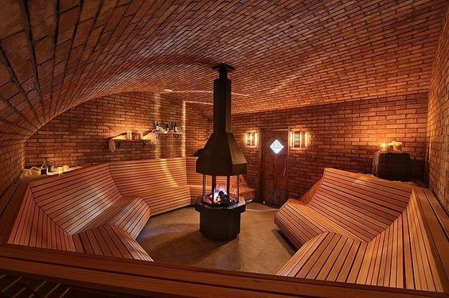

上京したての頃、東京や神奈川のラーメン屋のおいしさにびっくりしました。ネットで調べて有名なお店を数多く回り中でも特に衝撃だったラーメンを3つ紹介いたします。1つ大学の頃よく行っていた大阪にある思い出のラーメンも紹介させていただきますので関西に行かれた際はぜひ。

サウナは趣味として進められる前はむしろ嫌いでした。友人にサウナの入り方を教えてもらってからは一人で行くようになるくらいサウナにハマりました。自分はサウナの環境というより外気浴の環境のほうが好きなので外気浴が気持ちいいサウナを紹介します。
関東の二郎を10店舗以上回ったのですが、ここの二郎が一番おいしかったです。豚がとにかくおいしいです。汁無しが有名な二郎なのですが、汁ありの二郎もおすすめでスープが甘く二郎で初めて完飲しました。
大阪にある醤油ラーメンのお店なのですが、初めてスープを飲んだ時とても衝撃的だったのを覚えています。今まで食べた醤油ラーメンはキリっとした醤油の味という印象が強かったのですが、ここのスープはとにかく甘くレンゲが止まりませんでした。
家系ラーメンの中ではここが一番好きでした。チャーシューのトロトロ感とスープのこってりがマッチしてごはんが最もすすむラーメンです。待ち時間があまりなくお店に入れるのも高評価です。
宮前平駅から坂を少し上ったところにあります。坂の上に温泉があるため露天風呂から見える景色は空しかありません。とても開放的な外気浴を味わえます。晴れている日は星が見えたりもします。サウナの温度は90度前後で、水風呂はジャグジーなので一気に体を冷やすことができます。
最寄りの門沢橋駅から少し歩いたところにある温泉です。都心から離れたいときや、ゆっくりしたいときに行っています。この温泉の露天風呂も開放的で樽風呂がいくつも並んでいるのが特徴的です。サウナはイベントなども開催しており日によってはアロマロウリュを楽しむこともできます。